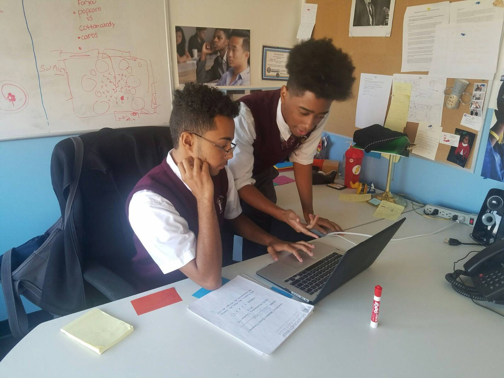

About Us

President Josmar Mateo
I was born and raised in Brownsville, Brooklyn by two immigrant parents. I am a father of two children. I have gotten my masters in Political Science and Economics from Columbia University. Since my parents were immigrants, I constantly kept seeing them struggle, and when I saw on the news that immigrants were being deported, I wanted to help them as much as possible because immigrants, especially those that were illegal, were the ones that originally made this country great. When I went to college, I barely saw anyone who was like me on the campus, which reminded me that those who were like me couldn't afford to be where I was at because of their parents' financial struggles and/or the lack of opportunities and help these people had. After acknowledging this fact, I wanted to bring more diversity into these high ranking universities, and the best way to do so was by fixing the economy.
Vice President Gabriel Bautista
I was born and raised right here in the Bronx and by my mother. She raised me and my 4 brothers all by herself in a 2 bedrrom apartment. I have gotten my masters in Political Science from Columbia University. Growing up was hard, watching my mother raise me and my brothers all alone. She did all sorts of odd jobs to keep a roof over our heads and food on the table. Being a poor women of color, I've always felt she's never been given a chance to suceed because of those things. Why should race and social status stop anyone from reaching their dreams? In Columbia I met with Josmar and we talked about about changing the world. That was where we wanted to take the toughest role and change the things worked in the US. We wanted to run for President and Vice President.
Campaign Manager Kennedy
I am a black female who was born and raised in Atlanta Georgia. I was surrounded by religious family members who didn't respect my decision to pursue science or my engagement to another woman. Also, I was often degraded and excludedwhen it came to certain training because I was not qualified. I moved up north hoping to gain the skills and career of my passion. However, I still recieved similar treatment. I began a women's rights organization which grew and eventually lead Mr. Josmar Mateo and Gabriel Bautista to contact me and put me on their team.
Campaign Manager Tyriq
At the age of 2 my pops died and I turned to the streets at the age of 10. By the age of 14 I was selling dope on the corner. One day I got locked up for concealing a fire arm without a licence. I was in jail for 6 year's and when I got out I was broke and didn't have anyone to turn to until 2 men wearing a black suit came and got me on my feet and doing good things for the community showing them right from wrong and my experience. Today they are known as Josmar Mateo(President) and Gabriel Bautista(Vice President). Without the help of these to making me a priority I would have been dead.
Campaign Manager Keven
I was born and raised in Bronx,New York. I slept in a household of 4. 2 of my sibilings, me, and my mother. I don't know how she could put all of us and still manage to work 2 jobs and bring food and clothing to the house. I always wondered why minorities were poor here in the United States. The government doesn't care for them too much. But the minorities are the main ones in the USA. This country is made up of immigrants from around the world. My main goal as a minority and watching my mother struggle her way to feed us was to provide and represent the minorities. I graduated from New York University with a law degree. At first I wanted to represent and defend the minorities, but my friend from high school, Josmar got in contact with me. He wanted help with making the minority a priority. I gladly accepted the job.